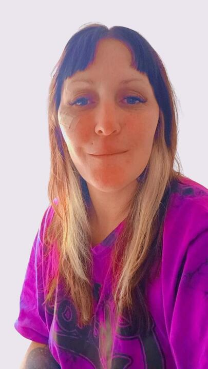

Sobre mí

Coni Sassali - Consultora Psicológica · Counselor
Acompaño a adolescentes desde los 16 años y adultos que atraviesan momentos de crisis personal, cambios importantes o situaciones que generan malestar emocional.
Mi trabajo se basa en la escucha activa, el respeto por la experiencia subjetiva de cada persona y la creación de un espacio de conversación donde sea posible hablar con libertad y sin juicios.
El objetivo del acompañamiento es ayudar a clarificar lo que sucede, comprender emociones y abrir nuevas formas de mirar la propia experiencia.
Las consultas se realizan de manera virtual, lo que permite sostener el espacio desde cualquier lugar.
El espacio de acompañamiento
Este espacio puede ser útil cuando estás atravesando:
momentos de crisis personal
angustia o incertidumbre
procesos de cambio
decisiones importantes
conflictos vinculares
duelos o pérdidas
necesidad de hablar y ordenar pensamientos
Cada proceso es único. El acompañamiento se construye respetando el tiempo, la experiencia y las necesidades de cada persona.
Cómo funcionan las consultas
Las consultas se realizan de forma virtual mediante videollamada. Cada encuentro tiene una duración aproximada de 50 minutos y se desarrolla en un espacio de conversación confidencial y respetuoso.
Reservá tu turno
A través del calendario online, elegí el horario que mejor se adapte a vos.
Recibí el enlace
Te llegará la invitación para la videollamada segura.
Nos encontramos
Conectamos en el espacio virtual para conversar sin prisas.
Propuesta grupal
En voz propia
Espacio grupal de desarrollo personal pensado para mujeres que desean abrir un tiempo y un lugar para reflexionar sobre sí mismas, sus experiencias y sus procesos personales.
El trabajo grupal permite compartir, escuchar otras perspectivas y reconocer que muchas vivencias que parecen individuales también son parte de experiencias humanas comunes.
El grupo busca generar un espacio de conversación donde cada participante pueda explorar su propia voz, revisar creencias, ampliar miradas y fortalecer el autoconocimiento.
Características del espacio
- modalidad virtual
- encuentros semanales
- duración 90 minutos
- grupos reducidos
Las personas interesadas pueden solicitar una entrevista inicial para conocer el funcionamiento del espacio grupal.
Reservar consulta
Puedes reservar tu turno directamente desde el calendario online donde podrás ver los horarios disponibles. Si prefieres consultar antes, también puedes escribir por WhatsApp.
Preguntas frecuentes
Contacto
Si sientes que necesitas un espacio para hablar, puedes reservar un turno o escribir para realizar una consulta.